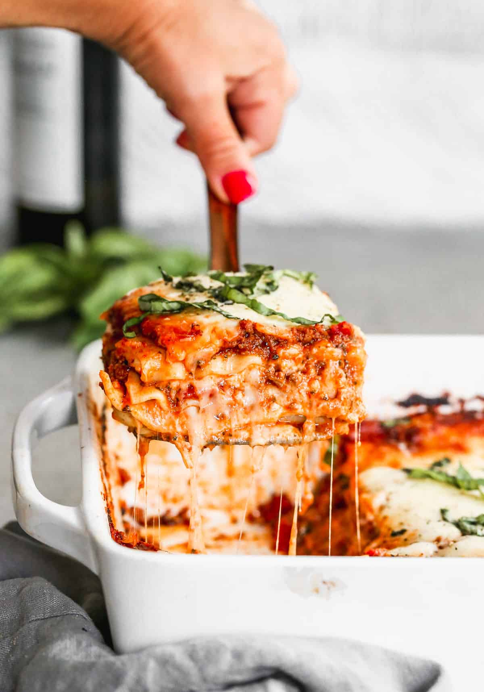

Lasagna Recipe

This homemade lasagna is warm, comforting, and layered with rich flavors
that make every bite satisfying.
Ingredients
- 9–12 lasagna noodles
- 1 lb (450g) ground beef (or sausage)
- 1 jar (24 oz / ~700g) marinara sauce
- 1 can (14–15 oz) crushed tomatoes (optional, for extra sauce)
- 2 cups ricotta cheese
- 2 cups shredded mozzarella cheese
- ½ cup grated Parmesan cheese
- 1 egg
- 2 cloves garlic (minced)
- 1 tsp Italian seasoning
- Salt & pepper to taste
Instructions
-
Cook the noodles
-
Boil according to package instructions. Drain and set aside.
-
Make the meat sauce
- Cook ground beef in a pan over medium heat until browned.
- Add garlic, cook 1 minute.
- Stir in marinara sauce (and crushed tomatoes if using).
- Add Italian seasoning, salt, and pepper.
- Simmer for ~10 minutes.
-
Mix the cheese filling
-
In a bowl, combine ricotta, egg, Parmesan, salt, and pepper.
-
Layer the lasagna (in a baking dish)
- Spread a little sauce on the bottom
- Layer noodles
- Add meat sauce
- Add ricotta mixture
- Sprinkle mozzarella
-
Repeat layers (usually 3 total), finishing with mozzarella on top
-
Bake
- Cover with foil and bake at 375°F (190°C) for 25 minutes
- Remove foil and bake another 10–15 minutes until bubbly
-
Rest & serve
-
Let it sit for 10 minutes before cutting (this helps it hold
together).
Nutrition Facts (per serving)
- Calories: ~580
- Protein: 32g
- Carbohydrates: 45g
- Fat: 28g